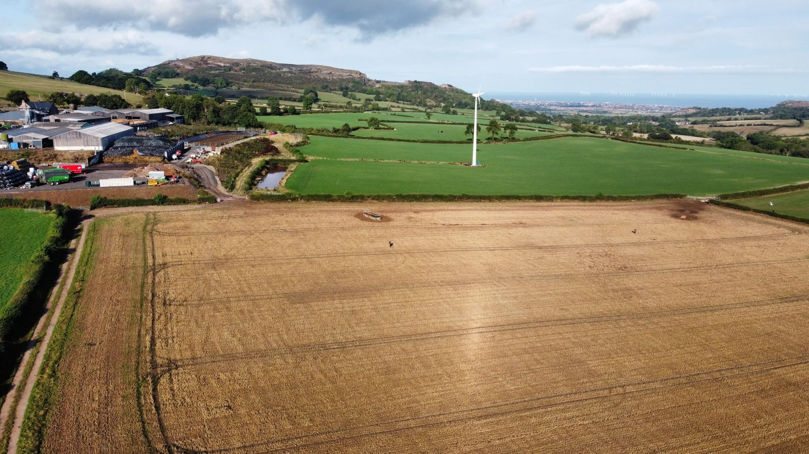
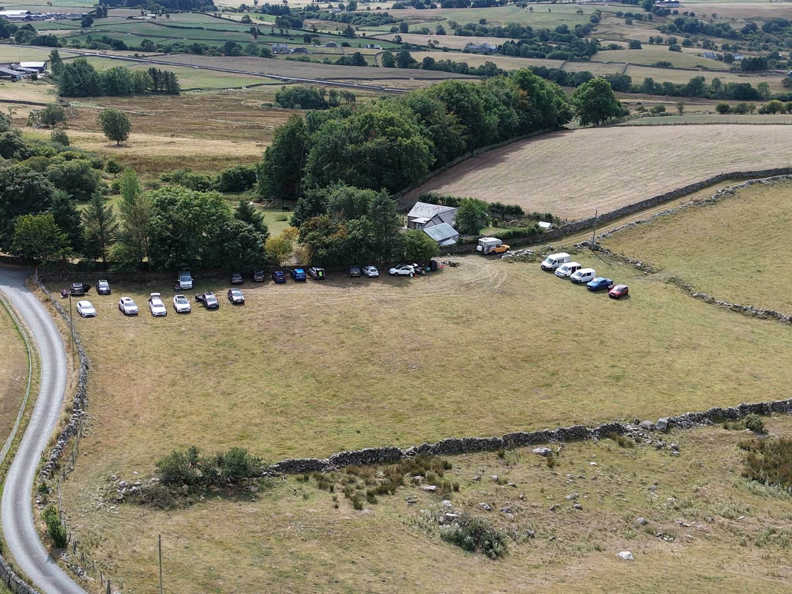
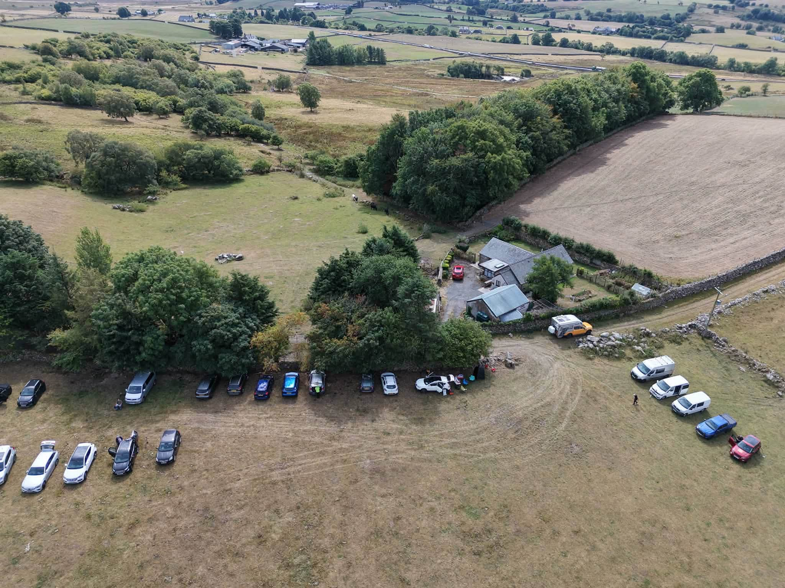

Good digs, good people
Organised detecting days where members can enjoy the hobby together, share finds and learn from more experienced detectorists.
A friendly metal detecting community bringing people together for organised digs, shared knowledge, great finds and responsible exploration of the history beneath our feet.
These aerial views give a flavour of the open countryside and group digs that make up the Digging Britannia experience.



A regional group based in Flintshire and Denbighshire in North Wales, welcoming detectorists from the surrounding area, we are about enjoying metal detecting responsibly and helping each other learn.
Organised detecting days where members can enjoy the hobby together, share finds and learn from more experienced detectorists.
We promote permission-based detecting, careful recovery, the Countryside Code and the NCMD Code of Conduct.
We encourage archaeological finds to be recorded through PAS Cymru and members to understand their responsibilities under Treasure law.
Change this feature after each group event. The image and details are controlled from data.js.